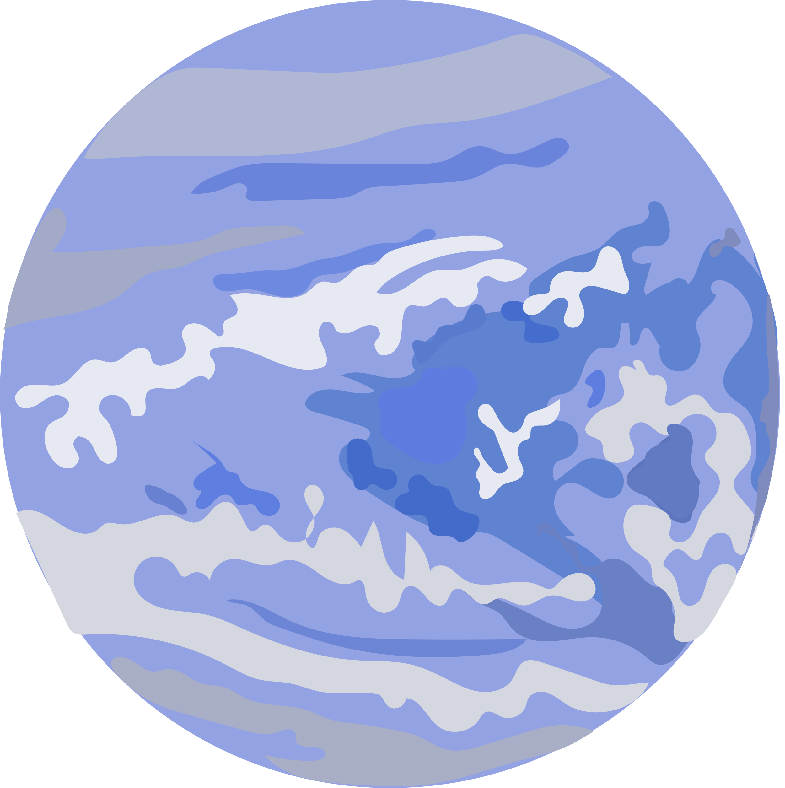

Neptune

Intro
Dark, cold and whipped by supersonic winds, ice giant Neptune is the eighth and most distant planet in our solar system. More than 30 times as far from the Sun as Earth, Neptune is the only planet in our solar system not visible to the naked eye and the first predicted by mathematics before its discovery. In 2011 Neptune completed its first 165-year orbit since its discovery in 1846. NASA's Voyager 2 is the only spacecraft to have visited Neptune up close. It flew past in 1989 on its way out of the solar system.Fun Facts
- Faint Rings: Neptune has at least five main rings and four more ring arcs, which are clumps of dust and debris likely formed by the gravity of a nearby moon.
- Very Gassy: Neptune's atmosphere is made up mostly of molecular hydrogen, atomic helium and methane.
- Lifeless: Neptune cannot support life as we know it.
Next
Back